Phase 8.7A browser evidence
538 passing browser assertions. Production build xJylRKU69tg23AoPA70Rq. Verification notes and limitations · Machine-readable summary
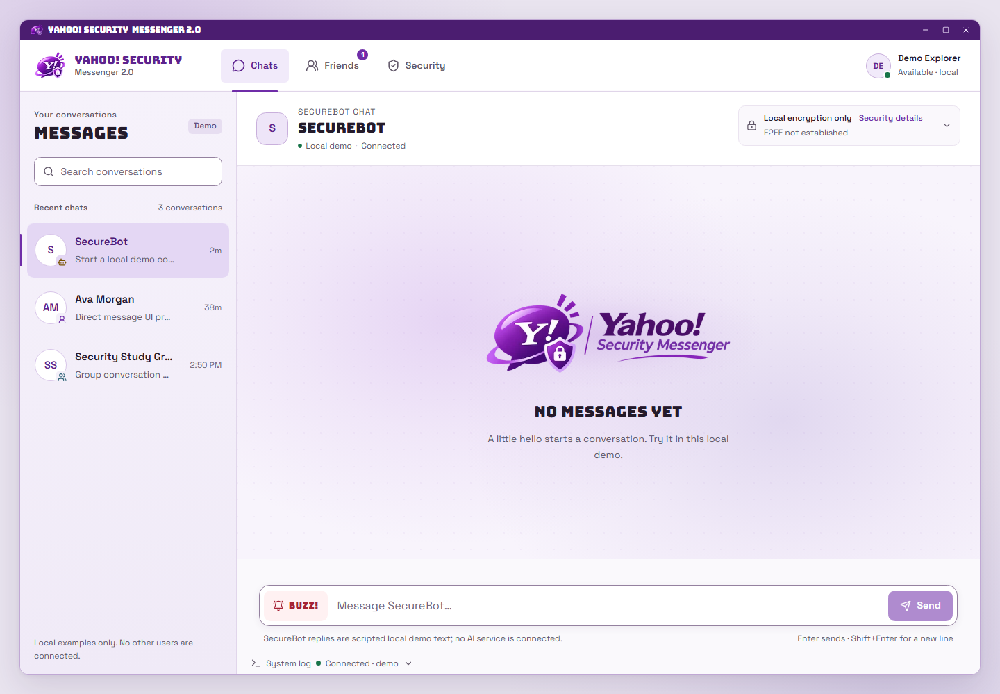
Desktop Light1440 × 1000; connected local demo.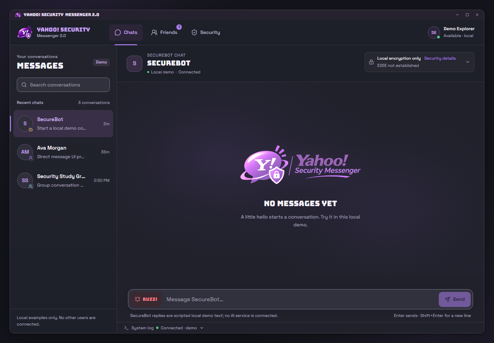
Desktop Dark1440 × 1000; connected local demo.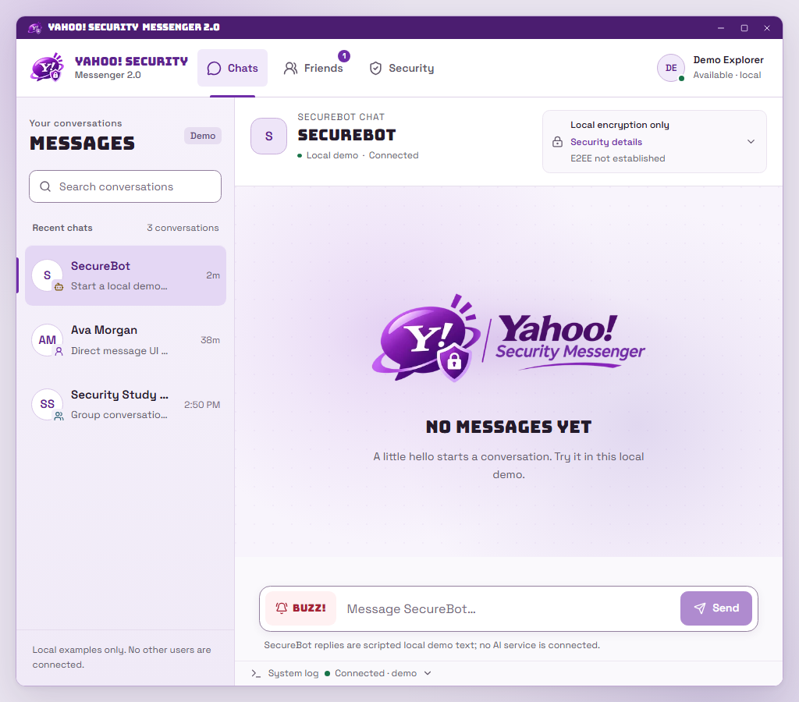
Laptop Light1024 × 900; connected local demo.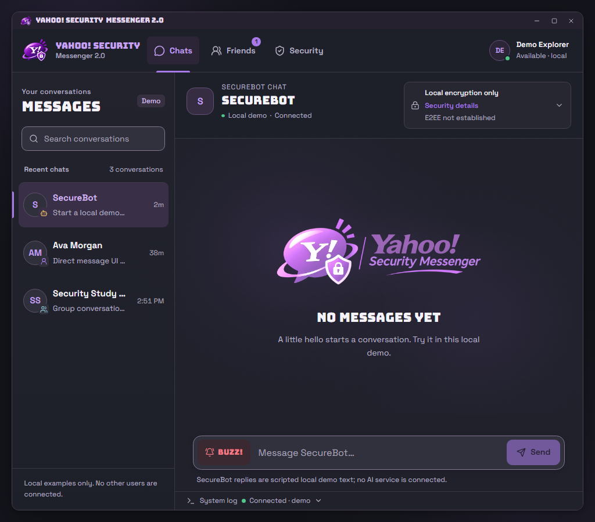
Laptop Dark1024 × 900; connected local demo.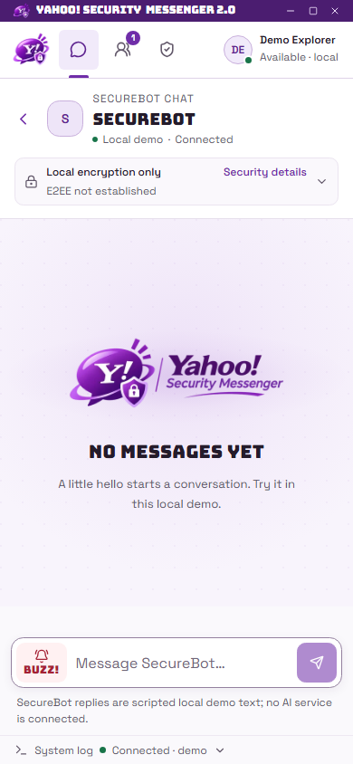
Mobile Light390 × 844; connected local demo.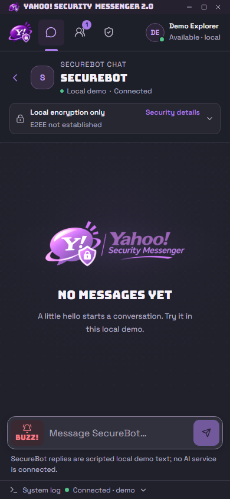
Mobile Dark390 × 844; connected local demo.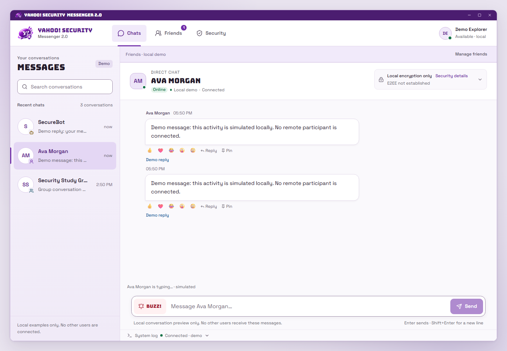
Direct typingAva direct-message preview with simulated typing, received events and local-demo connection status.Group typingExisting group preview with multiple simulated typers; no group-management service is implied.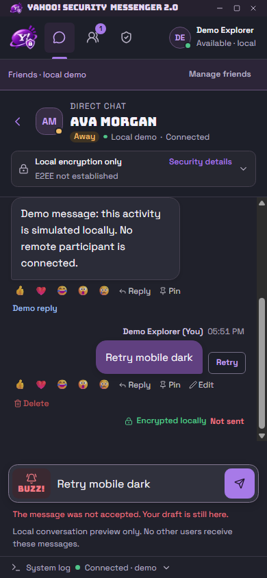
Failed sendMobile confirmed simulated send failure with an explicit manual Retry action and a single reconciled bubble.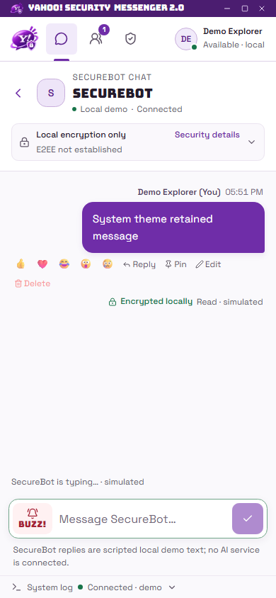
System appearanceSystem appearance follows the emulated OS theme while preserving the current message state.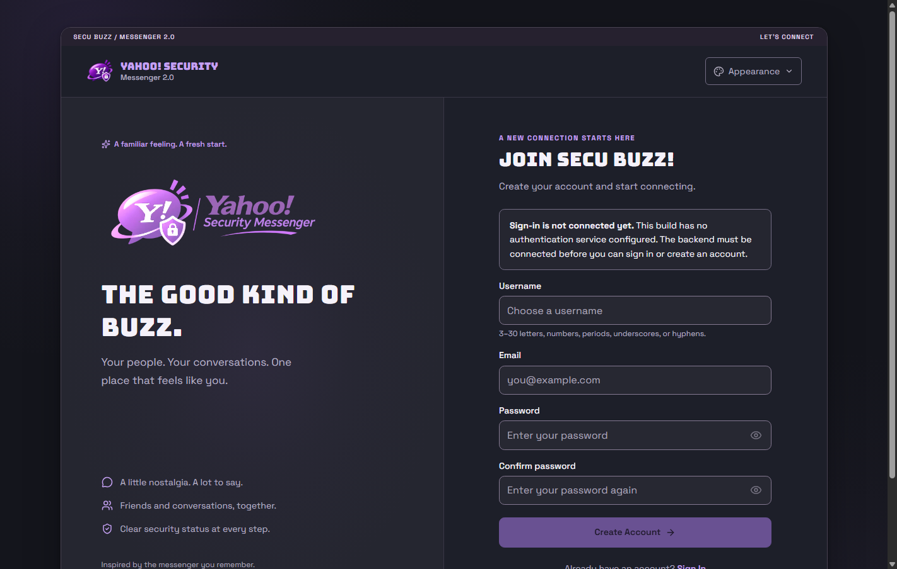
Production gateProduction signup with unavailable-backend notice, disabled form, and no demo authentication/realtime fallback.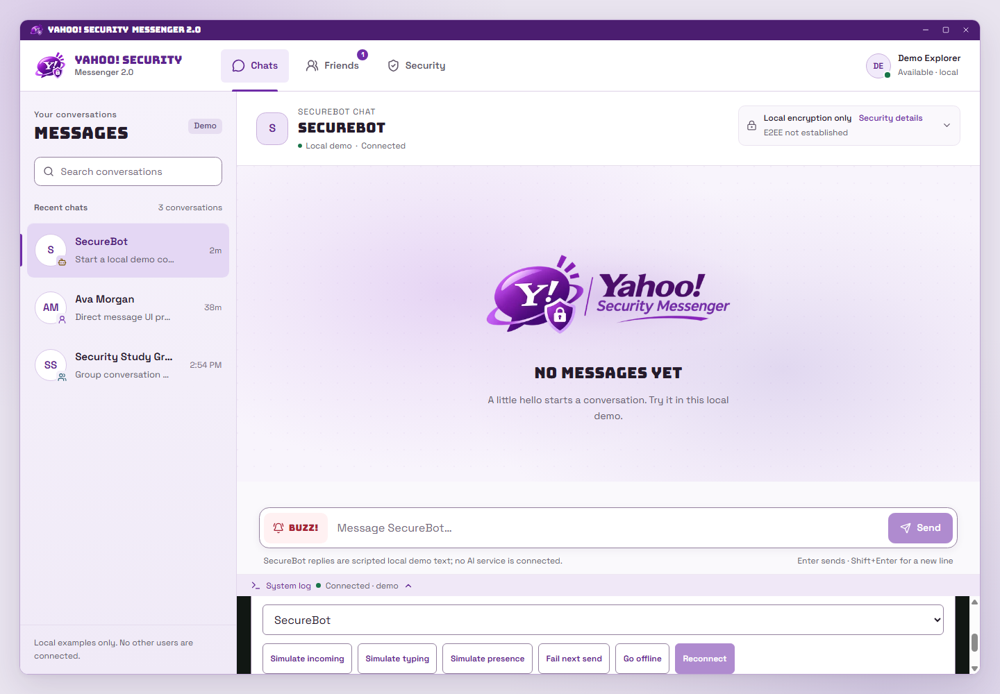
Desktop demo controlsOpen System Log scrolled to the local simulation selector and actions at 1440 × 1000.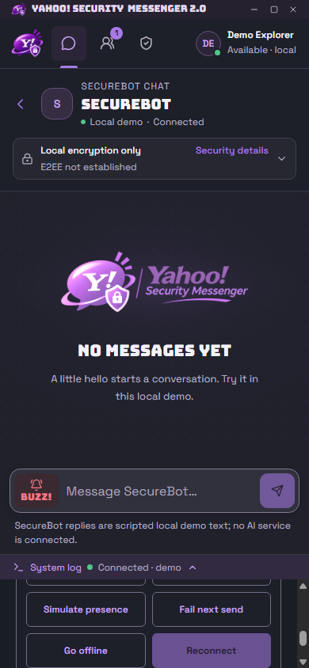
Mobile demo controlsOpen System Log scrolled to the responsive two-column simulation actions at 390 × 844.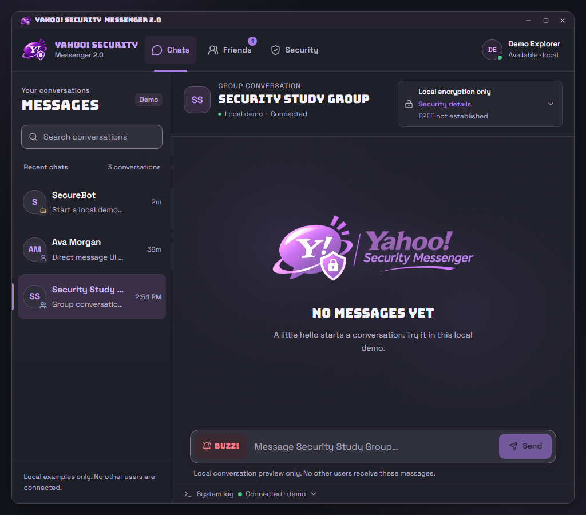
Group headingFull group heading fits at 1024 × 900; heading width and scrollWidth both equal 264 px.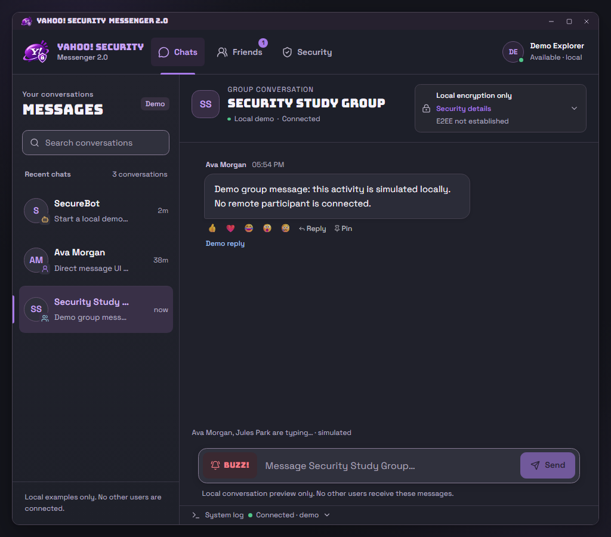
Group activity, immediateFull group heading immediately after simulated group typing/incoming and closing the controls. Group activity, settledThe same group activity 250 ms after closing controls; no heading or ancestor horizontal scrolling.
Group activity, settledThe same group activity 250 ms after closing controls; no heading or ancestor horizontal scrolling.These screenshots show local demo simulation and the production unavailable-backend gate. No real server, secure recipient key exchange, persistence, or multi-user delivery is claimed.